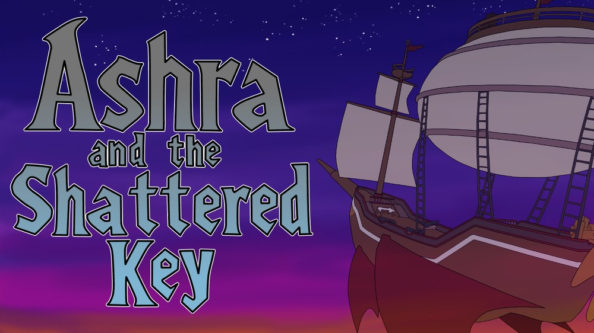
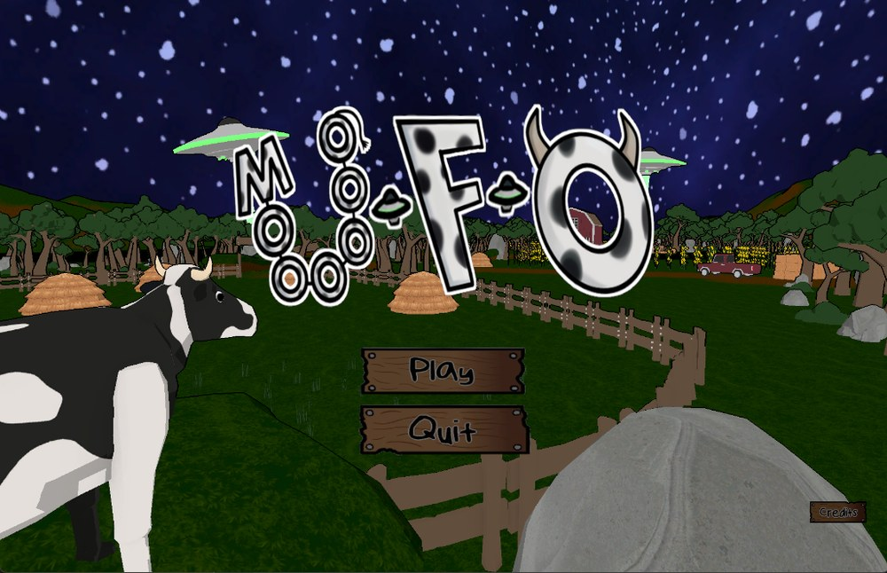
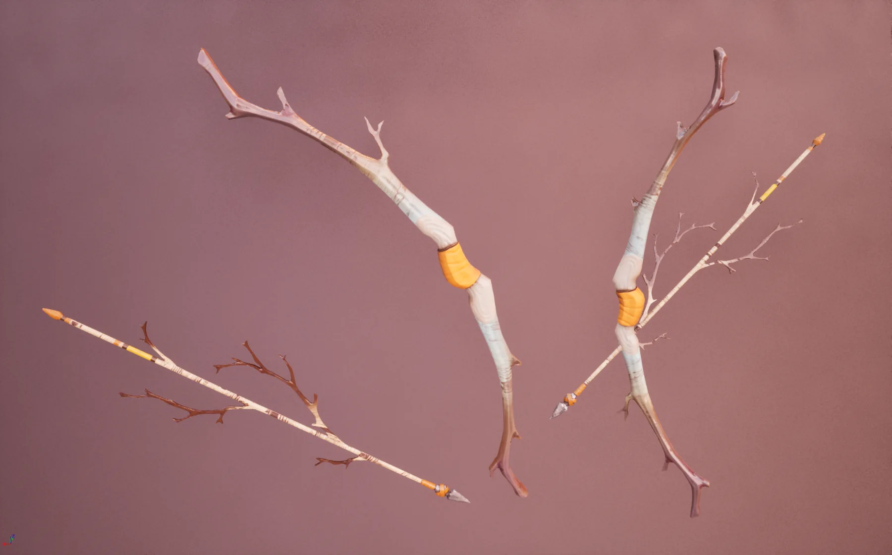

Projects
Each project page covers my role, the tools, and what I learned.
Game projects

The Keeper (WIP)
Workshop, ongoing. Producer focused on team check-ins, planning documents, and time tracking. 14-person team.
Open
Ashra and the Shattered Key
Game Production. Co-producer, UI layout/implementation, environment art. Team UI wireframes by others.
Open
Moo-F-O
Game Production. Producer, UI scripts/implementation, environment art. Team UI wireframes by others.
OpenPizza Cutter (WIP)
Casual Game Design, ongoing. Producer and Unity UI implementation. 7-person team.
Open
Environment art
Game-Ready Fantasy Environment (WIP)
Two-artist IDR collaboration. Stylized bark, stone, moss and foliage studies for a game-ready magical forest in Unreal Engine.
Open
Stylized Island Diorama
Procedural water, sand, brick, wood and fire materials · Substance Designer, Maya and Unreal Engine 5.
OpenStandalone modeling


Tree-Inspired Bow & Arrow
Stylized prop art — final renders, modeling breakdown, low-poly wireframes and UV layouts.
Open